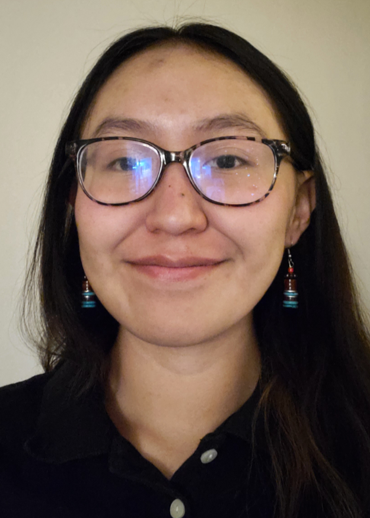

|  | Kayden Maddie VicentiUndergraduate Researcher |
My name is Kayden Vicenti, a dedicated student double majoring in software and electrical engineering. I excel at multitasking, balancing my academic schedule with research, outreach, and active involvement in NAUs Rocket Club. As a NAU's STICH Scholar, I contribute to culturally relevant STEM education in underrepresented communities
| Dates | Work |
|---|---|
| January 2022 - May 2022 | Graded for Dr. Severinghaus’s Electrical Engineering course in the School of Informatics, Computing, and Cyber Systems |
| August 2022 - May 2024 | Undergraduate research involving computer science and engineering curriculum |
| June 2023 | Undergraduate research with NAU’s Pathogen and Microbiome Institute (PMI) |